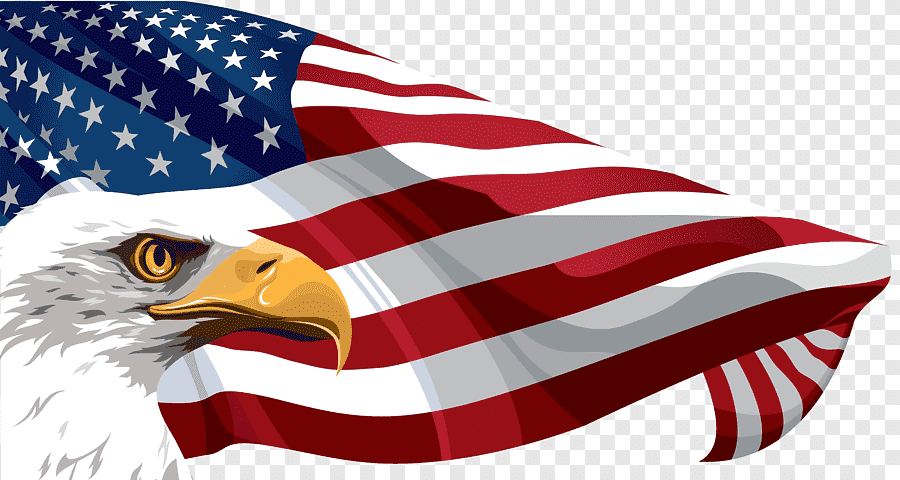

TUDO SOBRE O ESTADOS UNIDOS DA AMÉRICA

HISTÓRIA DOS ESTADOS UNIDOS
A data oficial da fundação dos Estados Unidos é 4 de julho de 1776, quando o Segundo congresso Continental,
representando as 13 colônias secessionistas, assinou a declaração da independência. Contudo, a estrutura do governo
sofreu uma grande mudança em 1788, quando os Artigos da Confederação foram substituídos pela Constituição dos Estados Unidos.
A cidade de New York foi a capital durante um ano, antes do governo transferir-se para a Filadélfia. Em 1791, os estados ratificaram a Carta dos Direitos, dez emendas à constituição que proíbem as restrições às liberdades pessoais e garantem uma série de proteções legais. Os estados do norte aboliram a escravidão entre 1780 e 1804. Em 1800, o governo federal mudou-se para Washington, DC (Distrito de Columbia).
No intuito de expandir seu território em direção ao o oeste, o governo americano iniciou um ciclo de guerras contra as populações indígenas, que durou até o fim do século XIX. A guerra contra a Inglaterra, que acabou empatada, serviu para reforçar o nacionalismo americano.
A origem dos Estados Unidos decorre da formação das Treze Colônias a partir do século XVII. Elas haviam sido instituídas pela Grã-Bretanha no processo de colonização inglesa na América do Norte.
As treze colônias eram:
- Carolina do Norte
- Carolina do Sul
- Conecticute
- Delaware
- Geórgia
- Ilha de Rodes
- Massachussetts
- Marilândia
- Nova Hampshire
- Nova Iorque
- Nova Jérsei
- Pensilvânia
- Virgínia
Presidentes dos Estados Unidos
O primeiro presidente dos EUA foi George Washington cujo mandato teve início em 1789.
Richard Nixon foi o único presidente americano a renunciar o seu cargo.
Quatro presidentes foram assassinados: Abraham Lincoln, em 1865; James A. Garfield, em 1881; William McKinley, em 1901 e John F. Kennedy, em 1963.
Em 2008 foi eleito o primeiro presidente afro-descendente: Barack Obama.
Dados gerais dos Estados Unidos
Capital: Washington D.C.
Extensão territorial: 9.831.510 km2
População dos Estados Unidos: 321.773.631 habitantes (dados de 2015)
Clima: São encontrados vários tipos de climas. Desde o tropical do Havaí e da Flórida ao clima polar do Alasca, que é a região mais fria dos EUA.
Idioma: Cerca de 80% dos habitantes usa o Inglês no seu cotidiano. O inglês é a língua oficial de 32 estados, mas não é a língua oficial dos EUA. Lá fala-se também espanhol, francês e havaiano.
Religião: Predomina o Protestantismo, seguindo-se o Catolicismo.
Moeda: Dólar Americano.
Sistema de Governo: República Federal Presidencialista.
Estados americanos
O país tem 50 estados, eles são:
Alabama, Alasca, Arkansas, Arizona
Califórnia, Cansas, Carolina do Norte, Carolina do Sul, Colorado, Conecticute
Dacota do Norte, Dacota do Sul, Delaware
Flórida
Geórgia
Havaí
Idaho, Ilha de Rodes, Ilinóis, Indiana, Iowa
Kentucky
Luisiana
Maine, Marilândia, Massachussets, Michigan, Minesota, Mississípi, Missúri, Montana
Nebrasca, Nevada, Nova Hampshire, Nova Jérsei, Nova Iorque, Novo México
Oklahoma, Ohio, Óregon
Pensilvânia
Tenessi, Texas
Utah
Vermonte, Virgínia, Virgínia Ocidental
Washington, Wisconsin, Wyoming
CLIQUE AQUI PARA CONHECER AS GRANDES FESTIVIDADES DOS ESTADOS UNIDOS
VENHA CONHECER A CULTURA DOS ESTADOS UNIDOS
VENHA CONHECER A CULINÁRIA DOS ESTADOS UNIDOS